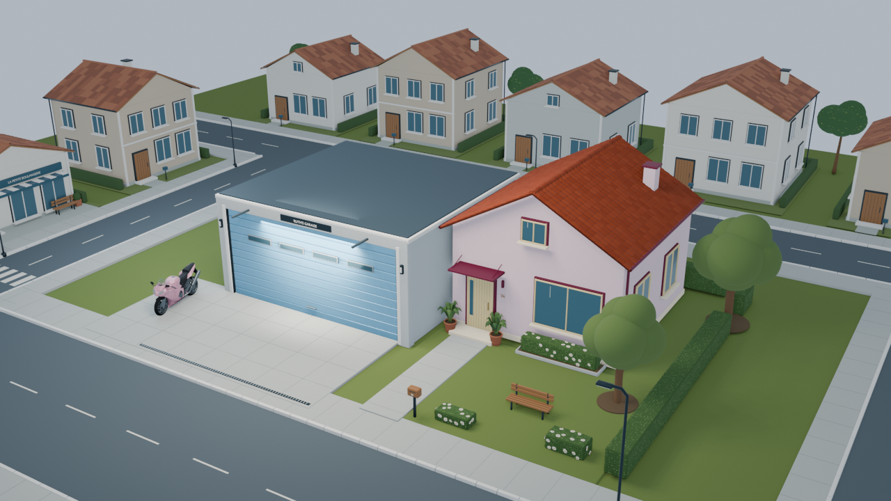

Portfolio
Création 3D · Jeux vidéo · Design

Bienvenue dans le quartier…
LA RUE DES PROJETS
Glissez pour explorer · molette ou + / − pour zoomer
LE PC DE L’ATELIER
Choisissez une démo et jouez directement ici.
Aucun projet trouvé.